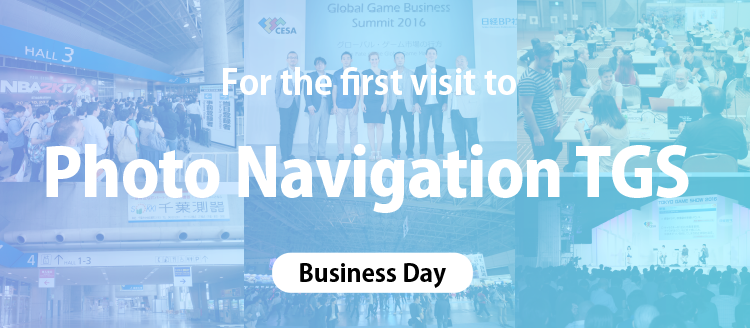

The first visit to TGS -Business Day Version-

-
Registration & Entry
TIPS on TGS Forum
-
TIPS on the venue
Re-entry & Exit
※We recommend that you get an idea of the look and feel of Tokyo Game Show 2017 (TGS2017) in advance. Photos from TGS2016 are included to help you form a mental picture. Please note, however, that there will be some differences between TGS2017 and TGS2016, so the photos are for reference purposes only.
TIPS on the Venue
-
How to check the locations of exhibits and exhibited content
-
-
The TGS2017 venue will be extremely crowded. We recommend that you confirm the locations of exhibits and the exhibited content in advance through the TGS2017 official website, make use of the official guide offered at venue entrances, or check the official app that can be downloaded free of charge.
This year, TGS will be utilizing all of the exhibition halls at Makuhari Messe (Halls 1 - 8 on the south side, and Halls 9 - 11 on the north side). However, the Family Game Park (Hall 1) and Cosplay Area (Hall 9will only be open on Public Day.
You can check information in advance. Please see the latest news regarding media partners and exhibitors, which are updated as needed on the official website’s homepage.
A map of the venue will also be published on the official website and app shortly before TGS2017 is held.
The official SNS accounts for Tokyo Game Show 2017 are as follows:
・Twitter：「Tokyo_Game_Show」
・Facebook：「Tokyo_Game_Show」
-
How to set up appointments for business meetings
-
If you would like to meet an exhibitor on Business Day, we encourage you to utilize the Asia Business Gateway, a “matching system” available on the official TGS2017 website that visitors can use to set up meetings with an exhibitor during TGS2017. Use of the system is free of charge.
By registering to use this system, Business Day visitors will be able to search technologies, products, services and other information related to exhibitors, contact the relevant persons at an exhibitor, and request an appointment for a meeting on Business Day.
Furthermore, the TGS will be offering a limited number of Business Day Gold Pass that will allow meetings in a quiet atmosphere. Meetings can even be set up with other Business Day visitors using the aforementioned online appointment system (Asia Business Gateway). See Admission to Business Day, September 21 (Thu.) and 22 (Fri.) for details on how to apply for membership.
Visitors who apply for and receive Business Day Gold Pass will be able to use the Business Lounge meeting area that will be set up on the second floor of the International Conference Hall.

(Photo is for illustrative purposes only)
-
How to participate in Sense of Wonder Night (SOWN)
-
SENSE OF WONDER NIGHT 2017, an event for discovering new game ideas, will be held on the second day of Business Day (Sept.22) from 5:30 p.m. to 7:30 p.m. at the stage of e-Sports Area in Hall 11.You can use the entrance of Hall 11 to come to SOWN stage even after other entrances are closed on 5:00 pm. All Business Day visitors are free to attend this event (free of charge). Also, you can meet SOWN presenters at the Indie Game Area.
-
Storage lockers
-
There are no cloakrooms available within the International Exhibition Halls. However, there are coin-operated storage lockers at the second-floor concourse and other locations. Please note that all coin-operated lockers may be in use when you go; there is no guarantee that an empty locker will be available.
-
Foreign language support
-
The official TGS2017 website and official guide handed out during admission are written in two languages in Japanese and English, with a portion available only in Japanese.
The languages other than Japanese used at each booth will differ according to the exhibitor.
-
Rules on Wi-Fi usage
-
We ask that all visitors turn off the power on their mobile routers as well as turn off the Wi-Fi functions on smartphones, handheld game consoles, etc., when inside the Makuhari Messe International Exhibition Halls 1 - 8 (See “For your attention”).
This is because the sudden increase of recent years in the number of mobile devices in use has been creating a poor radio wave environment within the exhibition halls. This can have an adverse effect on the demonstrations and trial game-playing taking place at the venue. If you would like to use wireless LAN, there will be a Wi-Fi hotspot (free of charge) available on the second-floor concourse (near the escalator) of Halls 1 – 8.
-
Precautions on shooting photographs and videos at the venue with cameras, smartphones, etc.
-
Rules related to taking photographs or shooting videos at booths differ according to the exhibitor. Please follow the respective rule of the booth (some booths prohibit the shooting of photos and videos).
Furthermore, please be aware that videotaping and photo-taking by the mass media (e.g., TV, newspapers and magazines) and the TGS2016 Management Office will be taking place throughout the venue for news or record-keeping purposes. Please be forewarned that your likeness may appear in these shots.
-
Eating food, drinking beverages and smoking cigarettes at the venue
-
The Food Court will be located in Event Hall. The available menus, etc., will be published on the official website immediately before the start of TGS2016.
-
A beverages area will also be set up within Halls 1 – 8. Restaurants and concession stands, etc., are also located on the second-floor concourse. There are also restaurants in the Makuhari Messe vicinity (see Map here).
Smoking is prohibited at the venue except at designated areas (designated smoking areas are located at the second-floor concourse of Halls 1 -8 ).